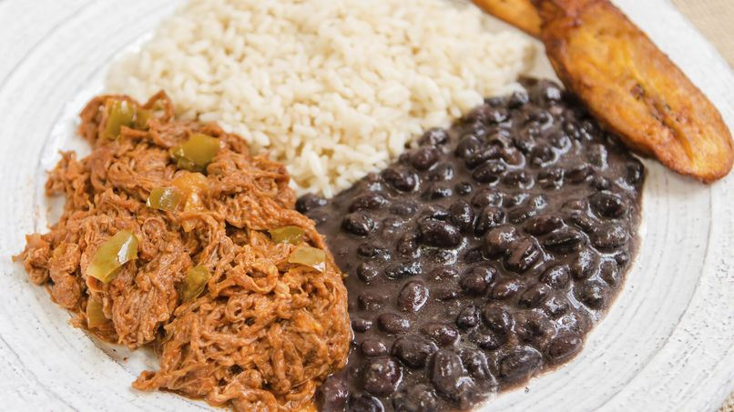

Pabellon

Description
Pabellón Criollo is the Venezuelan national dish and is without a doubt my family’s favorite. I must confess, I
don't prepare is as often as I would like, but every time I do it's a huge success! Looking at the recipe you might
think this dish is a little complicated, but it doesn't have to be. For example, the meat can be cooked and shredded
the day before. I use canned beans, something my mom disapproves of, but it saves me tons of time. Serve the
pabellón with arepitas and cream, it's delicious!
Ingredients
-
Shredded Meat
- 1 flank steak, approximately 2 lbs.
- 6 to 8 cups Progresso™ beef flavored broth.
- Salt and pepper to taste.
- 4 tablespoons olive oil.
- 1 large onion finely diced.
- 1 cup green pepper, chopped into small cubes.
- 3 cloves garlic, finely chopped.
- 1 can (6 oz) Muir Glen™ organic tomato paste.
- 1 can (8 oz) Muir Glen™ organic tomato sauce.
- 1 tablespoon Worcestershire sauce.
- 1 tablespoon dried oregano.
- 2 bay leaves.
-
Black Beans
- 1/2 cup corn oil.
- 1 medium onion.
- 2 cloves of garlic.
- 1 can black beans.
- Salt to taste.
-
Fried Plantains
- 1 cup oil for frying.
- 2 ripe, peeled and chopped, sliced bananas.
- 4 cups white rice, cooked to your liking.
Steps
- Shredded beef: Cut the steak into 4 pieces.
- Place the broth into a large pot over medium-high heat. Add the chicken at first boil and let cook for 15
minutes. Test the seasoning and alter the salt and pepper to taste. Cover and let cook for about 2 hours or until
the meet is completely cooked and tender. Keep an eye on the meat to prevent it from soaking up all the broth and
add more as it becomes necessary. When the meat is ready, remove it from the pot carefully and leave on a dish to
cool. Save the broth, about 3-4 cups of broth.
- Once the meat is cold enough, shred it with the help of two forks or your hands.
- Add the oil to a medium pan and let cook a bit. Sauté the onions and pepper for 3-5 minutes or until the onion
is translucent. Add the garlic and let sauté for one more minute. Incorporate the shredded chicken to the mixture
and mix well.
- Mix the tomato paste, tomato sauce, Worcestershire sauce and oregano in with the beef stew; mix well until
everything is well combined. Add this mixture to the meat and mix well. Add the bay leaves, cover and let cook for
20 minutes, or until most of the liquid has been absorbed.
- Black beans: Place the oil, onion and garlic in a blender. Mix at medium velocity until everything is well
combined.
- Sauté the onions and garlic for 3 minutes in a large saucepan over medium heat, stir constantly. Add the can of
black beans and mix well. Taste and adjust the seasoning if necessary. Cover and cook on low for 15 to 20 minutes.
- Fried plantains: Add oil to a medium pan and heat. When the oil is hot, fry the plantains in batches of 5 for
2-3 minutes on each side or until they're softened and browned. Remove from the pan carefully and place over paper
towels to absorb the excess oil.
- Serve: Add a generous amount of shredded beef to a dish, then rice, beans and fried plantains. Serve hot.